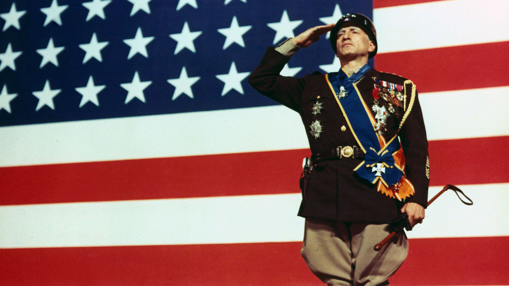

Introduction
George Smith Patton III was a prominent U.S. Army general known for his leadership and valor during World War II. One of the most successful and controversial military commanders in history, Patton played a key role in the Allied victory in Europe with his bold and aggressive strategies. His leadership in the campaigns in North Africa, Sicily, and Western Europe earned him respect and admiration from his troops and fellow commanders.
Key Achievements of George S. Patton
- Led the U.S. 3rd Army during the Normandy invasion and the subsequent rapid advance across France and Germany in 1944-45.
- Played a key role in the U.S. victory in the Battle of the Bulge, halting the German advance in the Ardennes.
- Commanded U.S. forces in North Africa and Sicily, contributing significantly to the defeat of Axis forces in these regions.
- Known for his unconventional leadership style, he instilled a sense of discipline, initiative, and aggressiveness in his troops.
Important Events During Patton’s Military Career
- 1912: Patton competed in the modern pentathlon at the Stockholm Olympics, gaining attention for his athletic ability.
- 1942: Led the U.S. forces in the invasion of North Africa, marking his first major combat command.
- 1943: Commanded U.S. forces during the invasion of Sicily, contributing to the defeat of Axis forces in the Mediterranean.
- 1944: Led the 3rd Army during the Normandy invasion and rapid advance through France, liberating key cities and pushing deep into Germany.
- 1945: Played a crucial role in the Battle of the Bulge, turning the tide of the German offensive in the Ardennes.
- 1945: Patton died in a car accident shortly after the war in Europe ended, leaving a legacy of boldness and leadership.
Learn More
For more detailed information about General George S. Patton, you can visit this Wikipedia page.
